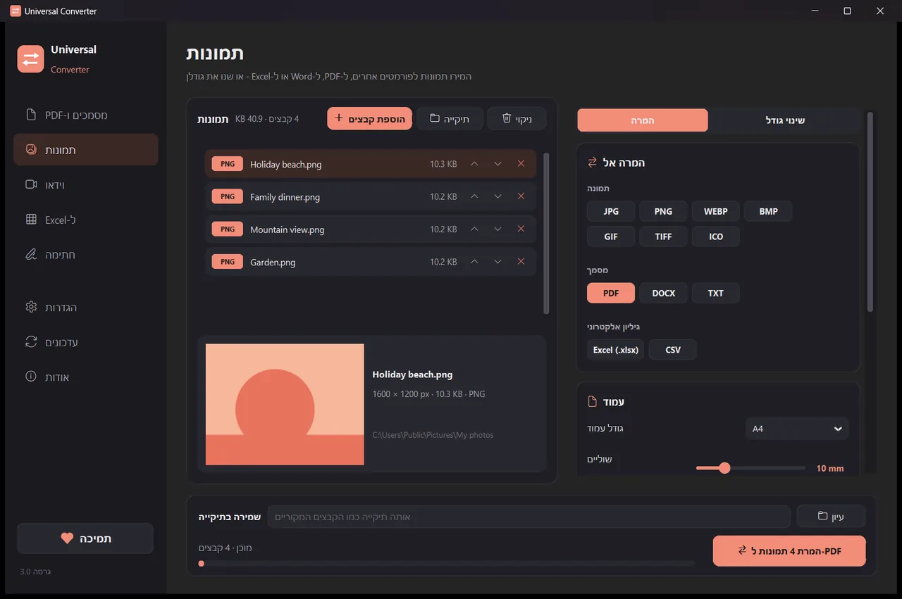
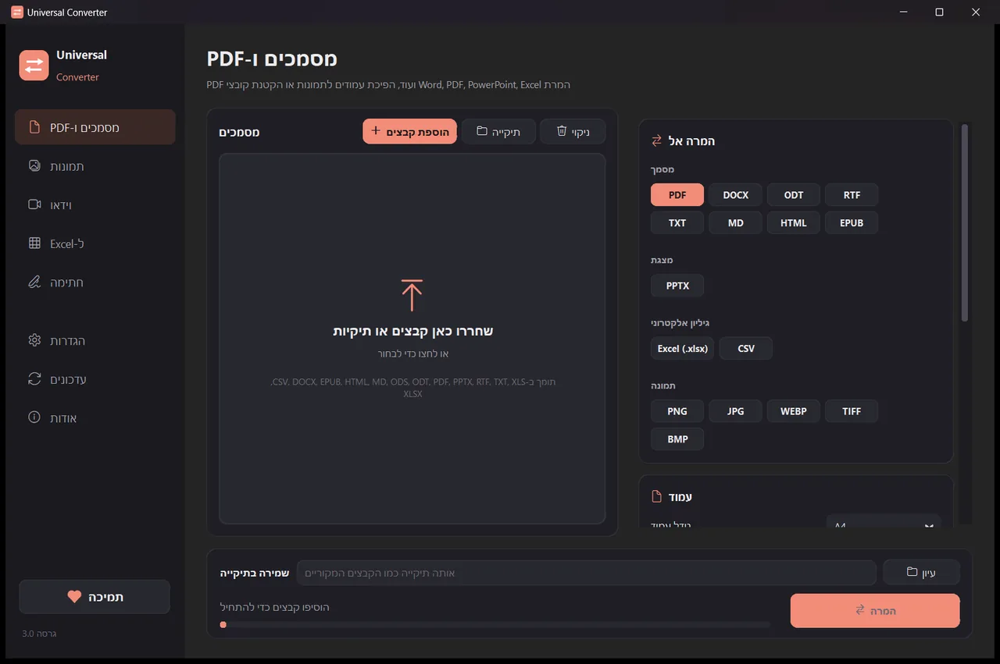
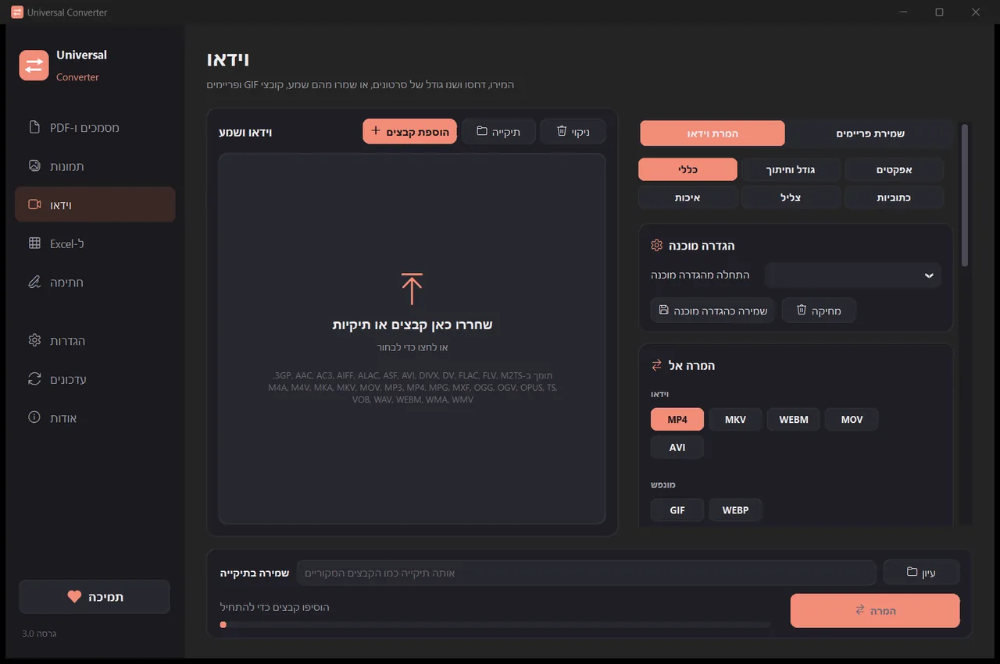
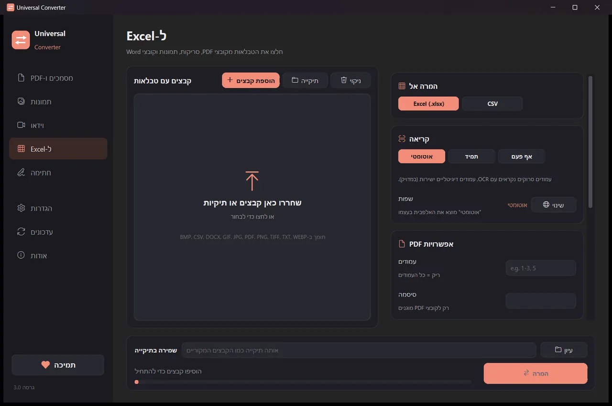

המירו את הקבצים שלכם במכשיר שלכם
תמונות, מסמכים, וידאו ושמע, קובצי PDF וטבלאות ל-Excel, הכול באפליקציה אחת. שום דבר לא מועלה: הקבצים שלכם אף פעם לא עוזבים את המכשיר.
איך מתקינים ומעדכנים
- פתחו את קובץ ה-.dmg שהורדתם וגררו את Universal Converter לתיקיית היישומים.
- פתחו את האפליקציה. בפעם הראשונה macOS חוסם אותה כי היא אינה חתומה על ידי Apple: לחצו על "סיום".
- פתחו את הגדרות המערכת > פרטיות ואבטחה, גללו למטה, לחצו על "פתח בכל זאת" והזינו את הסיסמה. עושים זאת פעם אחת בלבד.
עדכונים: אם תאשרו זאת כשהאפליקציה נפתחת לראשונה, היא בודקת גרסאות חדשות בכל הפעלה, מאמתת את החתימה הדיגיטלית שלהן ומתקינה אותן מתי שתבחרו.
איך מתקינים ומעדכנים
- הקישו על "הורדה ל-Android" בטלפון.
- פתחו את הקובץ שהורד. אם Android שואל, אפשרו לדפדפן או למנהל הקבצים להתקין אפליקציות.
- הקישו על "התקנה".
עדכונים: האפליקציה בודקת בערך פעם ביום ומודיעה כשגרסה חדשה מוכנה. הורידו אותה באותה דרך והתקינו אותה מעל הישנה; ההגדרות שלכם נשמרות.

פרטי
הכול רץ במכשיר שלכם. בלי העלאות, בלי המתנה בתור, בלי מגבלות גודל.
חינם
חינם לשימוש, בלי פרסומות, בלי חשבון ובלי סימן מים.
18 שפות
עברית, אנגלית, יוונית, ספרדית, איטלקית, גרמנית, צרפתית, פורטוגזית, פולנית, רוסית, ערבית, סינית, יפנית, קוריאנית, טמילית, אפריקאנס, יורובה והאוסה.
חמישה כלים בחלון אחד

מסמכים ו-PDF
המרה בין PDF, Word, ODT, RTF, TXT, Markdown, HTML, EPUB, PowerPoint ו-Excel. הפיכת עמודים לתמונות ואיחוד כמה קבצים ל-PDF אחד. גופנים, גדלים וצבעים נשמרים. הקטינו קובצי PDF לגודל שתבחרו.
תמונות
המרה בין JPG, PNG, WEBP, TIFF, BMP, GIF ו-ICO. שינוי גודל לפי פיקסלים, אחוזים או גודל קובץ, איחוד תמונות לקובץ PDF או Word, וקריאת הטקסט שבתמונות (OCR). אפשר להוסיף גם קובצי PDF: כל עמוד הופך לתמונה.

וידאו
המרת סרטונים בין MP4, MKV, WebM, MOV ו-AVI ודחיסתם עם AV1, H.265, H.264 או VP9. קיצור, חיתוך, סיבוב ושינוי גודל, יצירת GIF, שמירת פריימים כתמונות, או שמירת השמע בלבד כ-MP3, M4A, FLAC, WAV, OGG או Opus. ב-Android: MP4 או MKV עם H.264 או H.265; קיצור, חיתוך, סיבוב, שינוי גודל, שמירת פריימים, או שמירת השמע כ-M4A.

ל-Excel
העברת טבלאות מקובצי PDF, סריקות ותמונות ל-Excel או ל-CSV: דפי חשבון בנק, חשבוניות, מחירונים. קורא אנגלית, יוונית, ספרדית ועוד יותר מ-30 שפות. (טקסט בעברית עדיין לא מזוהה.)

חתימה
חתמו על קובצי PDF ומלאו טפסים. הקלידו את שמכם בסגנון כתב יד, ציירו את החתימה או השתמשו בתמונה שלה. האפליקציה מוצאת בעצמה את שורות החתימה, או שאתם לוחצים במקום שבו צריכים להופיע החתימה, ראשי התיבות, התאריך, טקסט או סימני וי. חתמו על קבצים רבים בבת אחת; המקור נשאר ללא שינוי.
- משתמש בכרטיס הגרפי לווידאו כשאפשר: בדרך כלל מהיר פי 5 עד 20.
- גררו תיקיות שלמות: כל קובץ מומר בבת אחת.
- אומר לכם כשקובץ שייך לכרטיסייה אחרת, ומעביר אותו לשם בלחיצה אחת.
- מודיע על גרסאות חדשות; ב-Windows וב-Mac הוא יכול להתקין אותן בשבילכם, עם אימות דיגיטלי.
- מראה בהיר וכהה, בהתאם למכשיר שלכם.
איך זה עובד
- פתחו את Universal Converter ובחרו מסמכים ו-PDF · תמונות · וידאו · ל-Excel · חתימה בצד שמאל.
- גררו את הקבצים או תיקייה שלמה לחלון, או לחצו על "הוספת קבצים".
- לחצו על "המרה". הקבצים החדשים נשמרים ליד המקוריים, או בתיקייה שתבחרו.
מה הוא יודע לעשות
- המרת PDF ל-Word
- המרת מסמכי Word ל-PDF
- איחוד כמה קבצים ל-PDF אחד
- דחיסת PDF לגודל שתבחרו
- המרת עמודי PDF לתמונות JPG
- הפיכת מסמך סרוק לקובץ Word הניתן לעריכה
- המרת תמונות בין JPG, PNG, WEBP ועוד
- שינוי גודל של תמונות או הקטנתן לגודל קובץ
- איחוד תמונות ל-PDF אחד
- העתקת הטקסט מתמונה (OCR)
- דחיסת סרטון בלי להעלות אותו
- המרת סרטונים בין MP4, MKV, WebM, MOV ו-AVI
- שמירת הצליל של סרטון כ-MP3
- יצירת GIF מסרטון
- העברת טבלאות מ-PDF ל-Excel
- המרת דף חשבון בנק PDF ל-Excel
- חילוץ טבלאות מחשבוניות PDF ל-Excel
- חתימה על PDF
- מילוי טופס PDF
שאלות
זה באמת חינם?
כן. Universal Converter חינמי לשימוש, בלי פרסומות, בלי חשבון ובלי הגבלת זמן. אם הוא עוזר לכם, אפשר לתמוך בפיתוח שלו בתרומה וולונטרית, אבל אף פעם לא חייבים.
האם הקבצים שלי מועלים לאנשהו?
לא. כל המרה מתבצעת במכשיר שלכם, ולכן היא עובדת גם בלי חיבור לאינטרנט. האפליקציה מתחברת לאינטרנט רק כדי לבדוק עדכונים, להוריד שפות נוספות שבחרתם, ואם תאשרו זאת, לשלוח דוחות שגיאה אנונימיים.
Windows מציג אזהרת SmartScreen. זה תקין?
כן. המתקין עדיין לא חתום בתעודת חתימת קוד, ולכן Windows לא מזהה אותו. בחרו "מידע נוסף" ואז "הפעל בכל זאת". את העדכונים שאחר כך האפליקציה עצמה מאמתת דיגיטלית. או התקינו אותה מ-Microsoft Store, שם לא מופיעה אזהרה.
איך פותחים אותו ב-Mac?
פתחו את הקובץ שהורדתם וגררו את Universal Converter לתיקיית היישומים. האפליקציה אינה חתומה על ידי Apple, ולכן בפעם הראשונה macOS חוסם אותה: לחצו על "סיום", ואז פתחו את הגדרות המערכת > פרטיות ואבטחה, לחצו על "פתח בכל זאת" והזינו את הסיסמה. עושים זאת פעם אחת בלבד.
איך מתקינים אותו ב-Android?
הורידו את קובץ ה-APK לטלפון, פתחו אותו ואשרו את ההתקנה כשתתבקשו (Android 10 ומעלה). אנגלית ויוונית מובנות; את שאר השפות אפשר להוריד בהגדרות האפליקציה. האפליקציה מודיעה כשיש גרסה חדשה.
באילו שפות הוא מדבר?
האפליקציה זמינה בעברית, אנגלית, יוונית, ספרדית, איטלקית, גרמנית, צרפתית, פורטוגזית, פולנית, רוסית, ערבית, סינית, יפנית, קוריאנית, טמילית, אפריקאנס, יורובה והאוסה. בוחרים את השפה במתקין, או אחר כך בהגדרות.